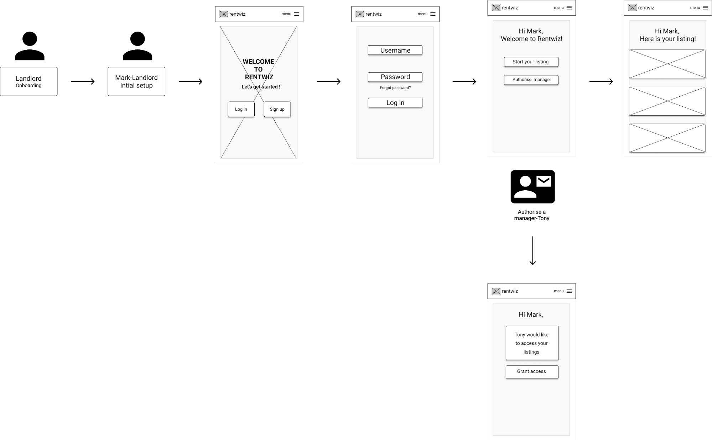
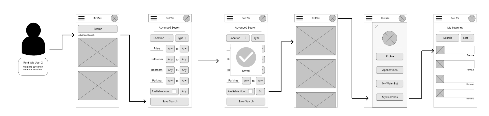

Rent Wiz Report
Inspired by the current rental crisis, Rent Wiz is a potential online rental marketplace, whose goal is to create a fair system of use for both tennants and lardlords. This report will discuss and analysis the research, findings, and solutions for the Rent Wiz plateform. The following work was completed by Shane, Barry, Emma, and Kelsi from MDDN402 at Victoria University of Wellington.
Business Objective
Main Objective
To become the home of New Zealand rentals and renters.
Mission Statement
To be the leading tenancy platform by making property rental simple and fair (for all parties).
Vision
To provide a transparent and integrity-based New Zealand rental market that complies with New Zealand’s Residential Tenancies Act.
Intended User Objectives
Tennants
- Provide a simple and easy way to find a tenancy,potentially their dream home!
- Increase (verified) renters chances of getting a rental.
- Tenant profile enables rental applications to be submitted with the click of a button.
Landlords
- Provide a simple and easy way to find tenants and manage their tenancies.
- Simple application management and shortlisting.
- Free advertising of rental properties.
- Pre-screened tenants saves time when shortlisting applicants
User Persona's
The creation of our User Personas 'Mike' and 'Tim' allowed our group to identitfy our core target user groups; Landlords and Tennants. During our research process these personas were key to understanding the possible problems and solutions for this platform, and were exceptionally important creating and understanding the user journeys for our user groups.
User Testing
Our group conducted our user testing and research over a one week period. Due to this time constraint, we were only able to interview four individuals; three tennants, and one landlord. While our interviews were completed individually, our group was able to create a structured interview plan to insure a fair and consistent interview process.


Findings
blah
User Journeys


Competitor Analysis
overview
Analysis of Interviews
Using the information gathered during our user testing, our group identitified three core findings from both landlord and tennant user groups.
Landlords
- Prioritise simple and open communication between the tenant, landlord, and other involved individuals.
- Control over the tenant selection process to insure an appropriate fit for the properties.
- Focused on streamlining the day-to-day administration and maintenance issues then large occasional task; such as finding new tenants.
Tennants
- Tenants become largely frustrated over the competitive rental market, this feeling peaks during January and February.
- Security and trust is a core issue for a tenant when renting, both with property management and property marketplaces.
- Communication problems with property advertisers when attempting to apply, creates annoyance and frustration amongst renters.
Prototypes
After analysing the information we gathered from the competitor analysis and user interviews, we identified four key areas to create and improve upon. These areas were; Landlord Onbaording, Tennant Verification, Tennant Application, and Watchlist management which we divided the tasks amongst ourselves. As a group we decided that the best approach to this process was to focus on prototyping for a responsive mobile application. We primarily worked on this aspect independently with the occasional comment and help from our team members.
Low Fidelity Wireframes
As our group began prototyping, we first began to create low fidelity wireframes. This enabled as to accurately invision the possible solutions to the development of the Rent Wiz application
Landlord Onboarding
Tennant Verification

Tennancy Application

Watchlists for Searches and Listings
General Testing Discoveries
- Difficult to select text-only buttons
- Confusion between Profile menu and site menu.
High Fidelity Wireframes
imagesResponce
Role Description
blah